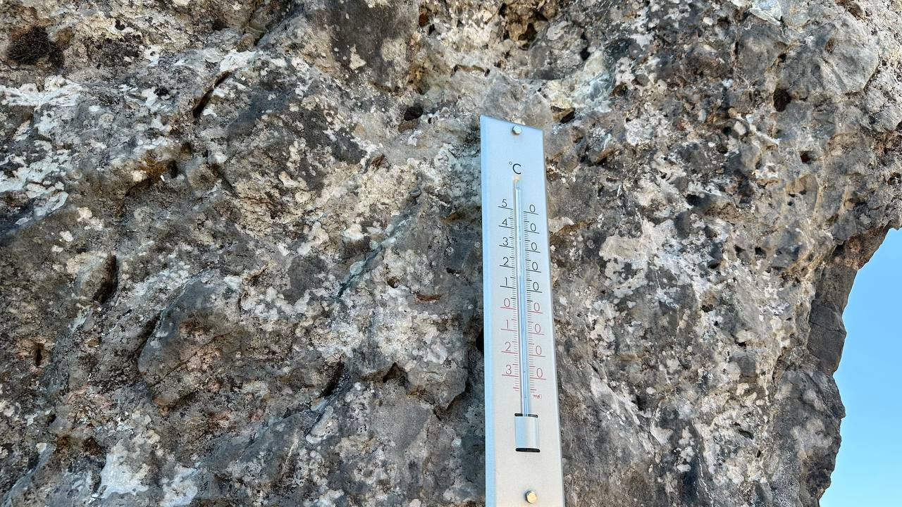
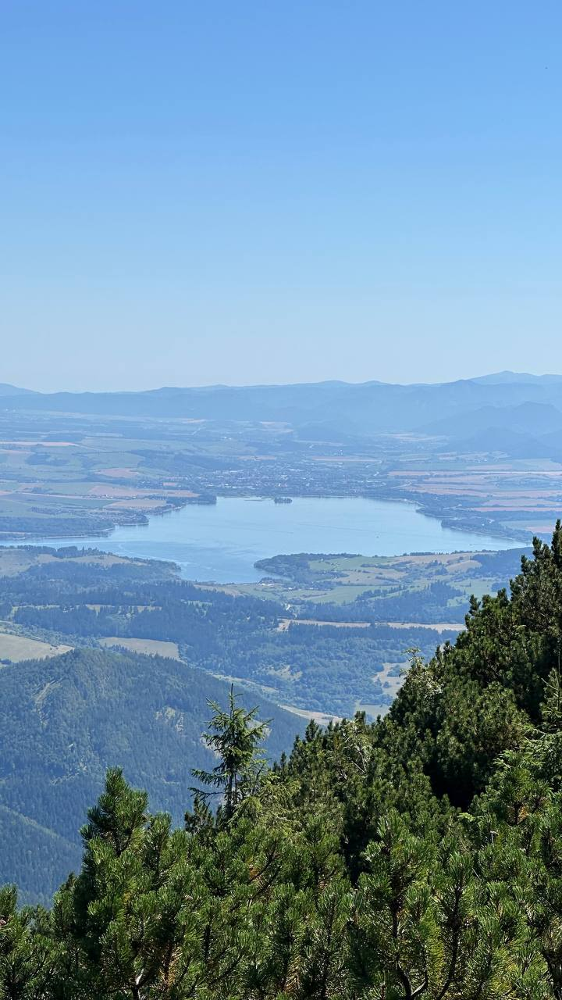

Veľký Choč
Sú vrcholy, ktoré dominujú krajine z každej strany, a Veľký Choč je presne taký. Stojí osamotený medzi Oravou a Liptovom ako prírodná rozhľadňa. Keď sa podmienky vydaria, ponúka jeden z najkrajších kruhových výhľadov na celom Slovensku.
Štart z Valaskej Dubovej
Výstup sme začali vo Valaskej Dubovej. Zaparkovali sme dole pri futbalovom ihrisku — parkovisko je síce platené, ale je to praktické a bezproblémové miesto na štart túry. Odtiaľ už vedie klasický modrý chodník strmo nahor cez les a bralá.
Pätnásť stupňov na skale

Hoci slnko svieti naplno, horský vzduch už pripomína blížiacu sa jeseň. Pri výstupe pomedzi vápencové bralá teplomer na skale ukazuje sviežich 15 stupňov. Ideálna teplota na výstup — čisté nebo, príjemný chládok od skaly a vôňa ihličia a kosodreviny.
Panoráma z vrcholu
Po prekonaní strmých úsekov a pásma kosodreviny sa otvorí vrcholový hrebeň. Zo samotného vrcholu (1 611 m n. m.) je vidieť všetko: hrebeň Západných a Nízkych Tatier, Malú aj Veľkú Fatru a širokú kotlinu pod nimi. Modrá obloha bez jediného mraku necháva vyniknúť každý obrys okolitých hôr.

Modrá hladina Liptovskej Mary

Pohľad na juhovýchod púta pozornosť vodná nádrž Liptovská Mara. Z tejto výšky vyzerá ako obrovské morské oko vsadené medzi zelené kopce a polia. V popoludňajšom svetle sa leskne v kontraste s tmavou zeleňou horských lesov a kosodreviny v popredí.
Veľký Choč nesklame v žiadnom ročnom období, ale v tomto neskoroletnom teple a čistom vzduchu má osobitné čaro. Stojíte hore, okolo vás len priestor a ticho, a pod nohami celý Liptov.